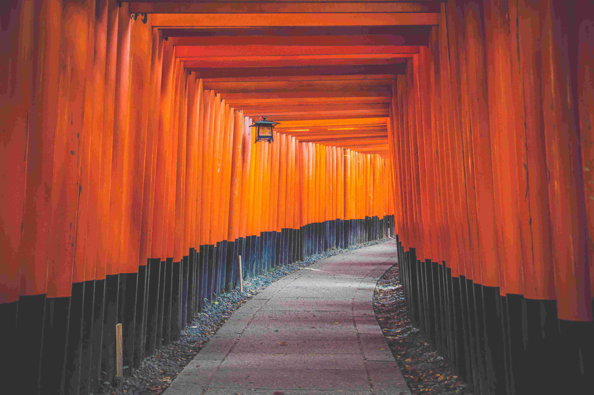
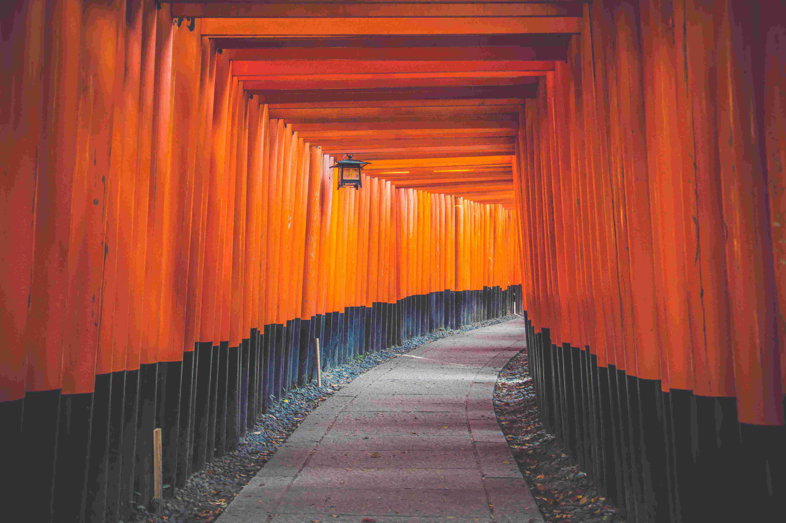

Kyoto is a major city in the Kansai region of Japan. Its population is 1.5 million people. The city of Kyoto is the capital city of the prefecture of Kyoto. Kyoto is one of the cultural, educational, and technology centers of Japan. In it are many universities including Kyoto University, the second oldest national university of Japan.
Kyoto is the capital city of Kyoto Prefecture, located in the Kansai region of Japan. It is most well known in Japanese history for being the former Imperial capital of Japan for more than one thousand years, as well as a major part of the Kyoto-Osaka-Kobe metropolitan area.
With its 2,000 religious places – 1,600 Buddhist temples and 400 Shinto shrines, as well as palaces, gardens and architecture intact – it is one of the best preserved cities in Japan.
About 20% of Japan's National Treasures and 14% of Important Cultural Properties exist in the city proper. The UNESCO World Heritage Site Historic Monuments of Ancient Kyoto (Kyoto, Uji and Otsu Cities) includes 17 locations in Kyoto, Uji in Kyoto Prefecture, and Ōtsu in Shiga Prefecture.
Kyoto is renowned for its abundance of delicious Japanese foods and cuisine. The special circumstances of Kyoto as a city away from the sea and home to many Buddhist temples resulted in the development of a variety of vegetables peculiar to the Kyoto area.
Landmarks To Visit
- Nijo Castle
- Fushimi Inari Taisha Shrine
- Kyoto Imperial Palace
- Kinkaku-ji Temple
- Kiyomizu-dera Temple
- To-ji Temple
- Enryaku-ji Temple
- Ninna-ji Temple
 
